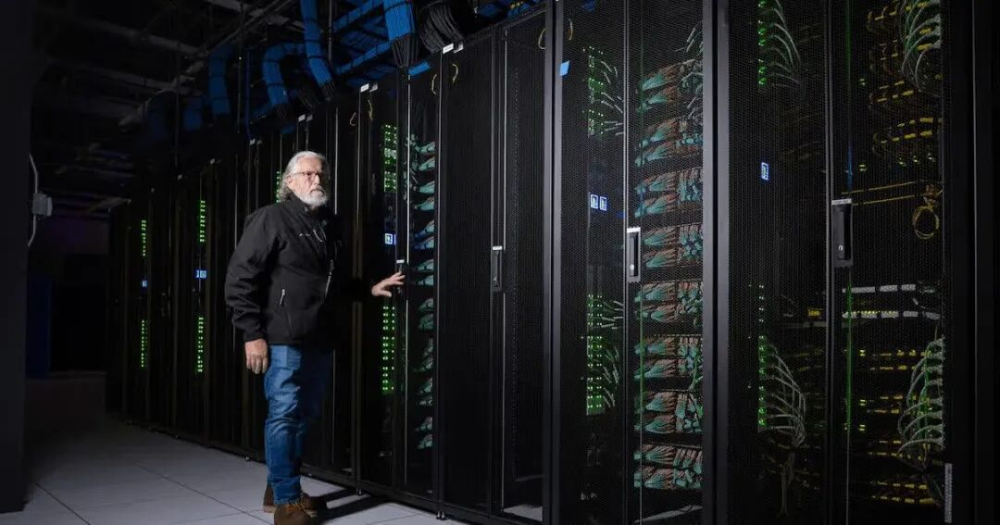
图1｜CoreWeave 的 AI 数据中心机房内部，公司官网图片
不断地扩张既是公司发展的目标也是公司风险的原罪。
CoreWeave 是美国算力租赁龙头公司，其客户有微软、OpenAI、Meta、Anthropic，股东是英伟达。在专做 AI 算力出租的公司里，它是最大、最早上市的一家。主营业务是算力租赁。（买英伟达的芯片，装进机房，接上电，再按时间租给做 AI 的公司，但是自己并不做模型）
CoreWeave 的资本支出和手上的现金仍不匹配，未来仍然需要不断借钱建设。这并不是他一家的问题，这只是美国数据中心运营方的一个缩影。10 月 14 日，CoreWeave 首席执行官英特拉托向全体员工发出一封信。信中称，在手订单足以覆盖全部债务，外界的反应是非理性的，竞争对手没有我们已经建成的东西。
前一晚，投资人 Chamath 在 X 上讨论这家公司的借款，马斯克在下面回了一个词“哎呀，吓人”。同一天，投资者对这家公司的债务转为谨慎，债权人集中撤出。
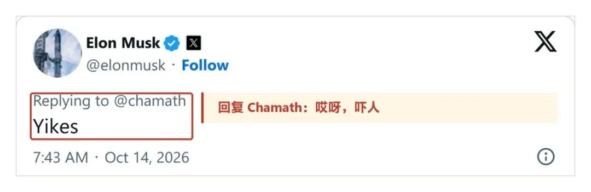
图2｜马斯克在 X 上对 Chamath 帖子的回复，2026 年 10 月 14 日
拿着合同去借款
CoreWeave 拿着合同去借款，合同对手方信誉度越高，借钱成本越低。季报写明，客户合同几乎全部是照付不议的长期合同，即无论用不用都要付费，客户通常预付合同总额的 15% 到 25%。它的做法是按项目逐笔举债：以一份客户合同和对应的那批芯片作抵押，单独借入一笔款项。
今年 3 月那笔 85 亿美元的贷款，抵押的是 Meta 的 6 年合同，利率约 5.9%，获得投资级信用；5 月那笔 31 亿美元，抵押的是 OpenAI 和 Cohere 的合同，利率约 9.2%。
同样的芯片，背后的客户不同，借款成本相差三个多百分点。
但是合同本身并不意味着真实收入，订单与真实收入中间还需要 1-2 年的建设时间。8 月的业绩电话会上，英特拉托把两个数分开讲：二季度末已经上线、可以运行芯片的电力 1.5GW；已签约的电力 3.7GW，到电话会当天增至 4.2GW，年底上线目标超过 1.85GW。季报也写明了 1040 亿美元在手订单附带的条件：先交付、服务达标，才确认为收入。
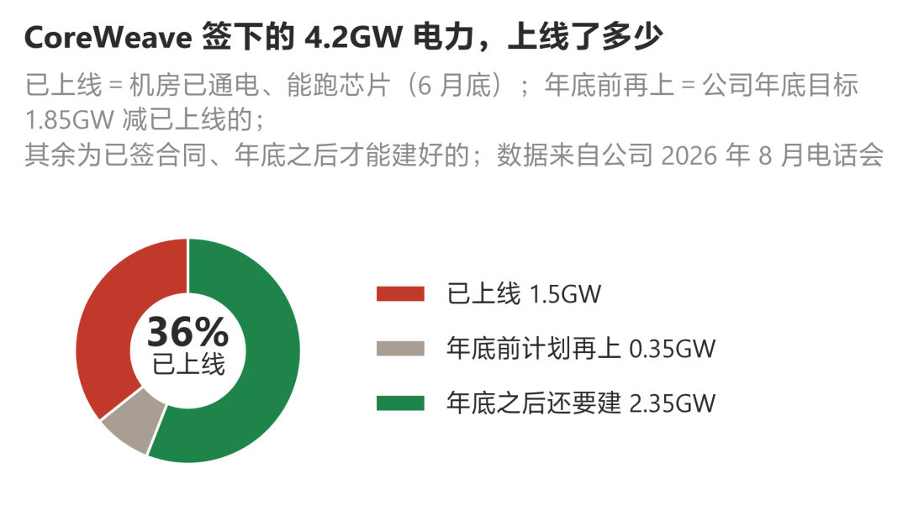
图3｜CoreWeave 签下的 4.2GW 电力里已上线的比例，2026 年 8 月口径
有交易员指出，已签约的电力不等于已经给芯片下了采购订单；如果 CoreWeave 不再承接新单，只把现有合同执行完，它会实实在在地盈利。
手头的钱有多少，还要支出多少
但是未来的收入保证和当下资金紧缺是不矛盾的。按 CoreWeave 提交给美国证监会的季报，截至 6 月 30 日，在手订单约 1040 亿美元；今年上半年，经营活动产生的现金 36.6 亿美元，用于购置设备、建设机房的支出 141.2 亿美元。6 月底，现金加上尚未提取的贷款额度约 155 亿美元，下半年到期本金 44 亿美元；8 月的电话会上，公司把全年建设支出计划上调至 350 亿到 390 亿美元，收入预期 124 亿到 132 亿美元。自成立以来，公司累计亏损 40 亿美元。
建设支出约为经营所得的 4 倍。订单是将来的钱，建设是现在的钱。
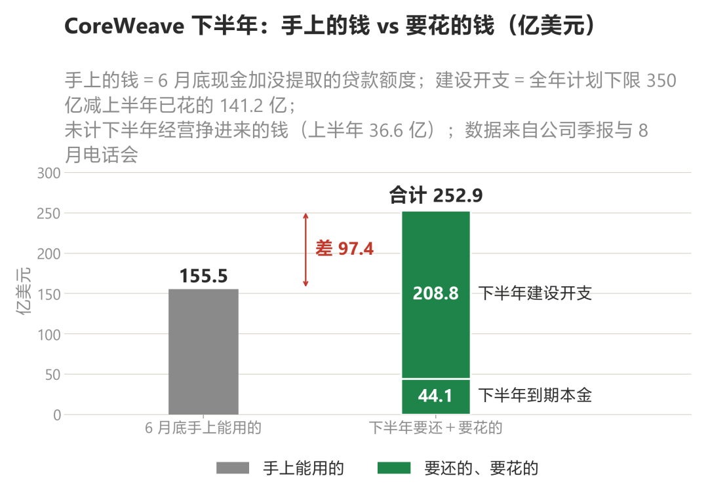
图4｜CoreWeave 下半年手上的钱与要还、要花的钱，单位亿美元，未计下半年经营所得
CPI 数据超预期后，加息的概率更高了。10 月 14 日公布的 9 月美国核心 CPI 环比 0.36%，市场预期 0.22%。路透援引 LSEG 的数据，10 月 28 日加息 25 个基点的概率从前一天的 21.6% 升至 60%。10 年期美国国债收益率当天盘中触及 5.33%，午后回落至 5.19%。国债收益率是全部借款成本的基准；基准抬升，像 CoreWeave 这样依赖新增借款建设的公司，新增借款的成本随之上升。它 98% 的收入来自价格早已锁定的长期合同，租金涨不上去，借款成本却在上行。
最大的风险会出在哪里？最近北美数据中心已经很难发债借钱了。据一场卖方电话会，数据中心开发商这一两个月几乎没有新的债务发行，一笔由 Meta 提供担保的机房贷款，定价比预期高出 1 个百分点；按当前 8% 到 8.5% 的借款成本，开发商测算后认为项目已不具备经济性。英伟达支持的澳洲同行 Firmus，10 月撤回了约 50 亿美元的上市计划。
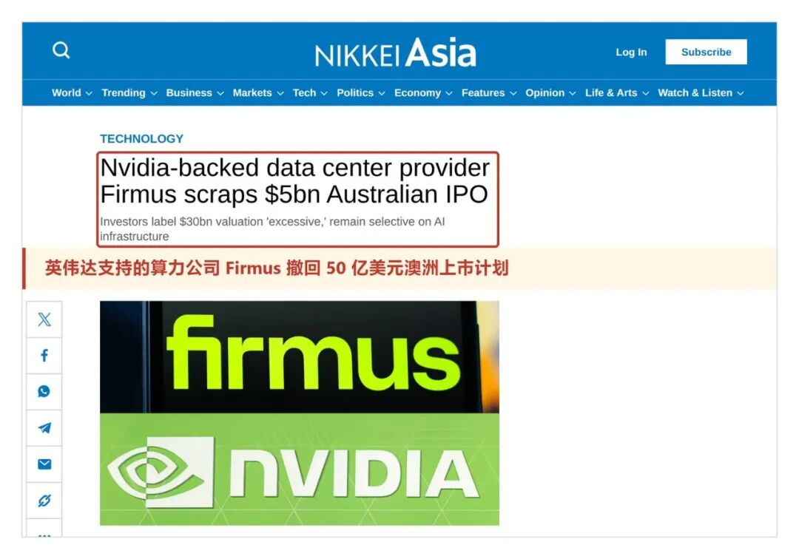
图5｜日经亚洲 2026 年 10 月 9 日报道：Firmus 撤回澳洲上市计划
同一天，研究机构高德纳发布预测：到 2030 年，成本压力和缺乏差异化的商业模式会使八成以上的算力出租公司不再独立经营。
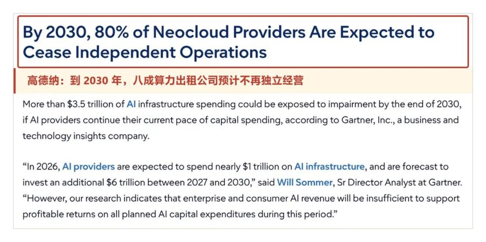
图6｜高德纳 2026 年 10 月 14 日新闻稿
房租照常交，利息照常交
不断地扩张既是公司发展的目标也是公司风险的原罪。CoreWeave 目前使用的机房全部为租赁，季报原话是：我们目前所有的数据中心和办公室都是租的。由开发商负责拿地、建楼、接电，CoreWeave 整租之后部署自购的芯片。西德州的 Helios 园区由 Galaxy 开发，租期 15 年，一期 133MW 今年 7 月按期交付；北达科他的 Applied Digital 园区签约 225MW；Core Scientific 在几处机房合计签约约 770MW。
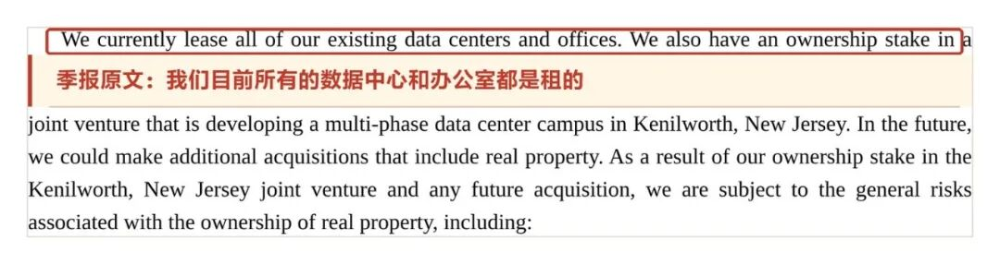
图7｜CoreWeave 2026 年二季报原文，美国证监会网站
自建的仅两处，新泽西 Kenilworth 园区 9 月刚开工，预计 2027 年完工；宾州 Lancaster 园区一期 100MW，仍在筹建。
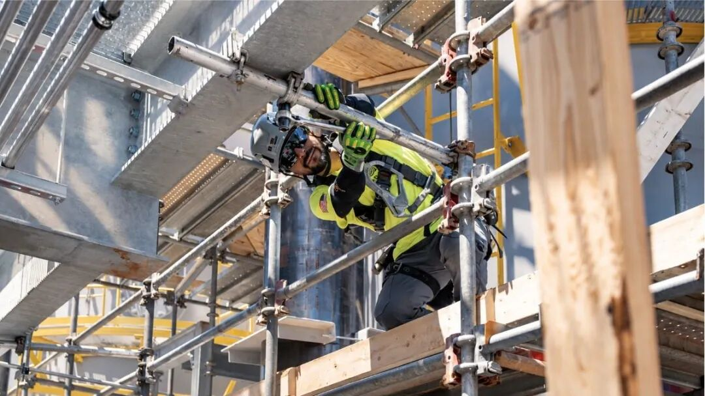
图8｜Kenilworth 园区施工现场，CoreWeave 官网图片
算力中心的建设交付一旦遇到延误，就会影响收入。2025 年 11 月，Core Scientific 在德州 Denton 为 OpenAI 建设的机房延期，CoreWeave 下调了全年收入预期。电话会上英特拉托表示，客户同意调整交付时间、合同到期日相应顺延，合同总额不变。今年 1 月，有分析师在与管理层会面后表示，项目已回到正轨。
合同总额一分未少，只是整体后移；到合同到期那天，那批芯片的技术代际也更旧了。
因为电力、许可等原因，数据中心可能会遇到延误。世邦魏理仕董事总经理麦格雷恩表示，大型数据中心所需的燃气轮机交付周期可能长达三年，变压器要等两到三年，扩建速度未必赶得上需求；200MW 以上的大型机房，空置率不到 1%。CoreWeave 自己的招股书也提示，供电方可能提出苛刻条件，公司可能遭遇严重延误和成本大幅上升。
房租照常交，利息照常交。延误的代价不止于此。购入的芯片先计入在建工程，投入使用之日才开始产生租金，从购入到装机通常需要 3 个月；6 月底，这类已购入、尚未投入使用的设备和工程有 119 亿美元。已签约、尚未开始执行的租约，未来租金约 355 亿美元，其中一部分在建设期间就要按开发商已经发生的建设成本付款。为了租用机房，它向开发商开具的信用证半年内从 2.94 亿美元增至 5.33 亿美元。
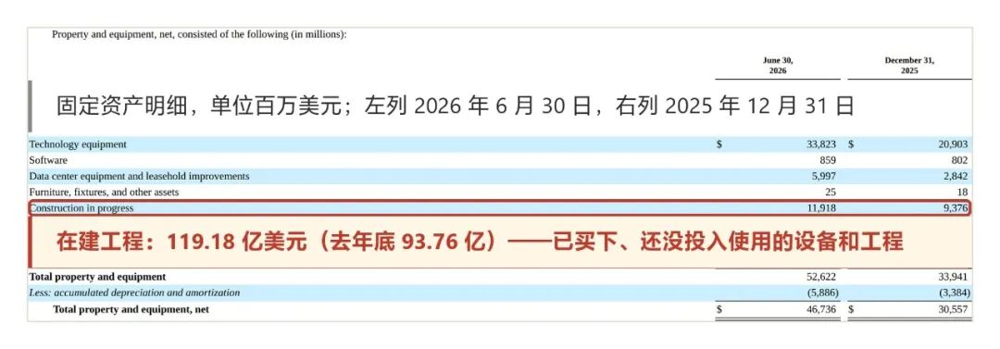
图9｜CoreWeave 2026 年二季报，在建工程 119 亿美元，美国证监会网站
季报还披露，公司此前曾因供电不足、服务未达标，向一位客户退还过服务费。
自建算力是算力租赁的最大威胁
CSP 和大模型公司自建算力是最大的威胁。按年报，微软贡献的收入占比 2023 年 35%、2024 年 62%、2025 年 67%；到今年二季度，前三大客户合计约 72%，公司未披露具体名称。有报道援引知情人士称，微软计划到 2032 年把全球算力容量扩至 38GW 以上，计划中未计入从 CoreWeave 这类公司租用的算力。
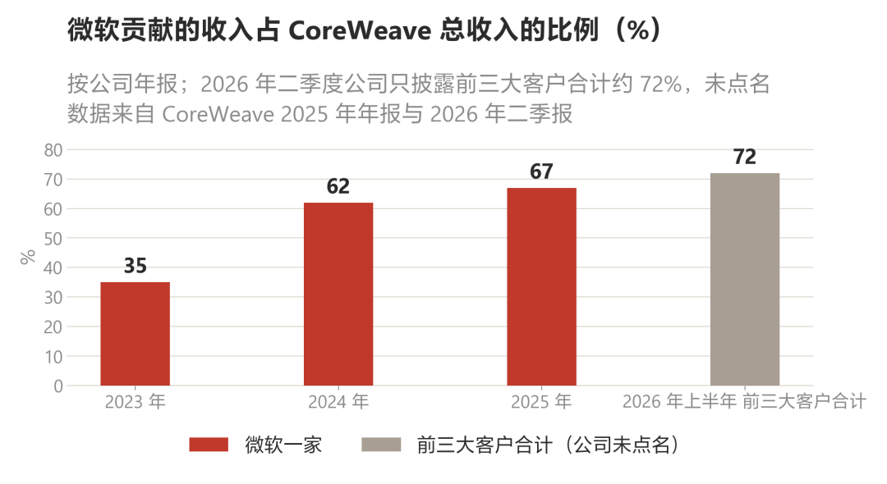
图10｜微软贡献的收入占 CoreWeave 总收入的比例
美国银行估计，到 2030 年全球 AI 数据中心容量会增至 219GW，亚马逊新增 42GW、谷歌 27GW、微软 24GW、Meta 18GW，CoreWeave 新增 7GW；到 2030 年那一年新增的容量里，算力出租公司约占四成。
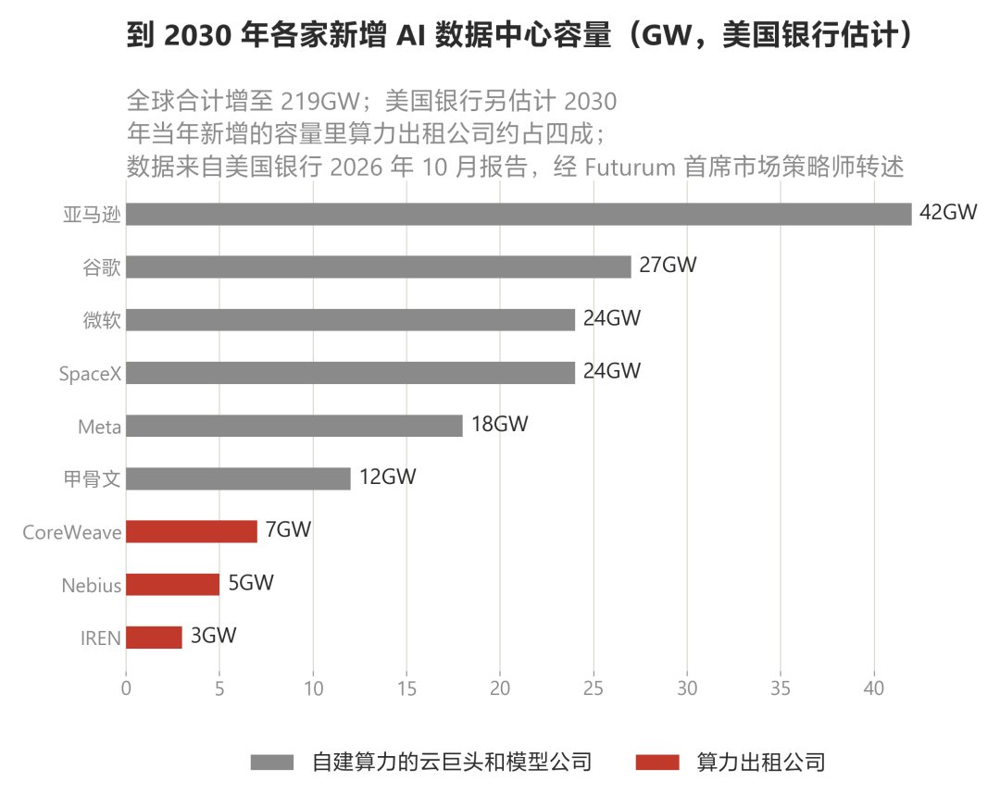
图11｜美国银行估计到 2030 年各家新增的 AI 数据中心容量
今年以来，有一个很明显的趋势就是硬件公司软件化，软件公司硬件化。一方面想要降低成本，另一方面软件和硬件在 AI 时代结合的越来越紧密，定制化、集成化是发展的必然趋势。CoreWeave 也在向软件延伸：2025 年先后收购四家 AI 开发工具公司，今年 9 月整合推出一套开发平台，Canva 是早期客户；它的托管推理服务，年化收入从上线时的 100 万美元增至 1 亿美元以上。研究机构 SemiAnalysis 9 月 23 日测评了 77 家算力出租公司，只有 CoreWeave 和 Nebius 进入最高档，称 CoreWeave 仍是技术标杆；同一份报告也说明，这份测评不对商业表现打分，CoreWeave 早年锁定的长期合同让它没有赶上这一年的租金上涨。
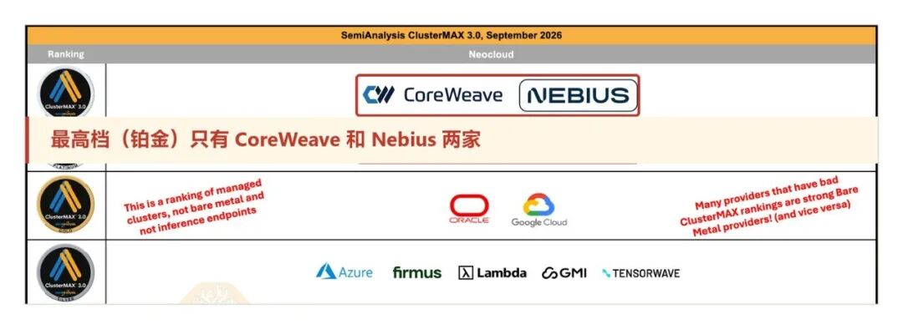
图12｜SemiAnalysis ClusterMAX 3.0 评级，2026 年 9 月
借钱成本短期很高，收入却卡在未来。CoreWeave 9 月发行了一笔可转换债券，原计划 30 亿美元，最终增至 37 亿美元；同月设立了 3500 万股的增发计划，文件说明，部分用途是推动公司信用向投资级迈进。它不缺订单，缺的是把订单转化为机房所需的资金。订单越多，前期需要垫付的资金越多。
年底能否如期上线 1.85GW，下一批机房是否还有人愿意出资建设？